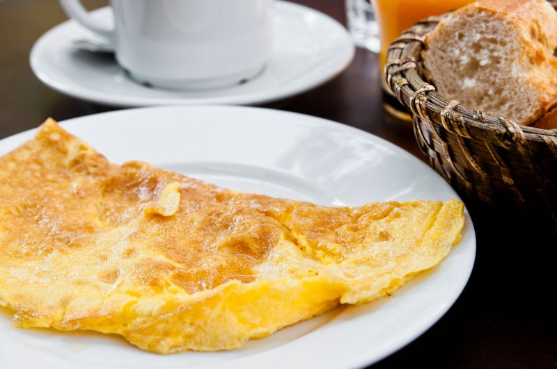

Scrambled eggs
Scrambled eggs
(The recipe is actually for an omlet, but because
the header turned out great I am going to ignore that fact and you will too)

Ingredients (for one big boned person serving -> )
- 3 LARGE eggs
- 3-4 sips of milk
- 1 table spoon of flour
- 1 little teaspoon of salt
Preparation
- Crack and whisk 3 eggs together in a bowl
- Add the flour and whisk
- Pour the milk and whisk away
- Throw the salt in and, you guessed it, whisk again
- Whisk for less than 20 seconds after putting everything in.
- Heat the some olive oil or butter on low-medium heat and pour in you beautiful concoction
- Let it sit for 2 or so minutes, turn off the heat, split it into quadrants and flip em. Hold for 1-2 minutes.
- Enjoy :)
DISCLAIMER
If the omlet turned out bad YOU  are the one who made it wrong, NO exceptions.
are the one who made it wrong, NO exceptions.